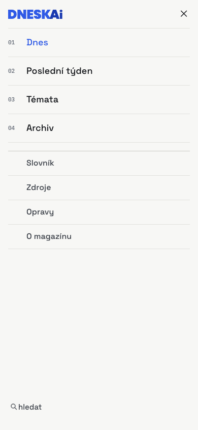

03 · Navigation · masthead, section bar, sticky state, mobile
From a numbered rail to a masthead with sections
Recommendation: a centred masthead (date left, logotype 34 px centre, search right) over a 2 px ink rule, then one row of section names with an ink underline on the active one, then a hairline. It reads as a publication because the first thing the page states is its name and the day, not a menu. The left rail returned 244 px of every viewport to eight links; the masthead gives the whole 1360 px grid to the reporting. Below 960 px the bar becomes a 56 px top bar and a horizontally scrolling section strip; the drawer holds the same list plus „Více“.
Sections in the bar: Dnes · Modely · Firmy a trh · Bezpečnost · Regulace · Vývoj, then a divider and „Více“ (Poslední týden, Archiv, Slovník, Zdroje, Opravy, O magazínu). Archiv is not in the bar by the owner's decision; it lives in „Více“ and the footer. The section list, scope and tag mapping are in DECISIONS.md.
Before · persistent rail (desktop) and drawer (mobile)

What reads as unfinished: a documentation-style index (01–04) for four items; the strapline set as a 11 px mono kicker; „hledat“ in lowercase; the 1 px column rule running the full viewport height beside 1000 px of empty rail on every page; and a white active tile with a blue left bar – a component from admin UIs.
After · desktop masthead at 1440 (page top)
- Row 1: 92 px. Date in IBM Plex Mono 13 px (the one mono element in the chrome), logotype 34 px, „Hledat ⌘K“ as a 40 px outlined control (border #8e8e88).
- 2 px ink rule (#14161a). This is the new „masthead rule“ token; the grey #c9c9c3 rule stays for grouping.
- Row 2: 50 px. Space Grotesk 500 15 px, #3c4149; active item 600 #14161a with a 2 px ink underline. Hairline #c9c9c3 below.
- Every target ≥ 44 px tall; focus ring unchanged (2 px blueprint, 2 px offset).
After · sticky condensed header (after 120 px of scroll)
52 px, paper background, hairline below, no shadow. Logotype 20 px left, the same section row centred at 14 px, short date and a 40 px search icon right. It appears with a 150 ms translate once the full masthead has scrolled out; prefers-reduced-motion shows it without the transition. Implemented with position: sticky on a wrapper and one IntersectionObserver toggling a class – the only client JS the navigation needs.
After · mobile 390: top bar + section strip, and the drawer
Top bar 56 px: menu, logotype 20 px, search. A 2 px ink rule, then the section strip at 44 px, horizontally scrollable, active item underlined; it is not sticky (the top bar is). Drawer: the six sections at 20 px, then „Více“, then search, then the date. No numbers.
The strip replaces the drawer as the primary way to change section on a phone: one thumb move instead of open → find → tap → close.